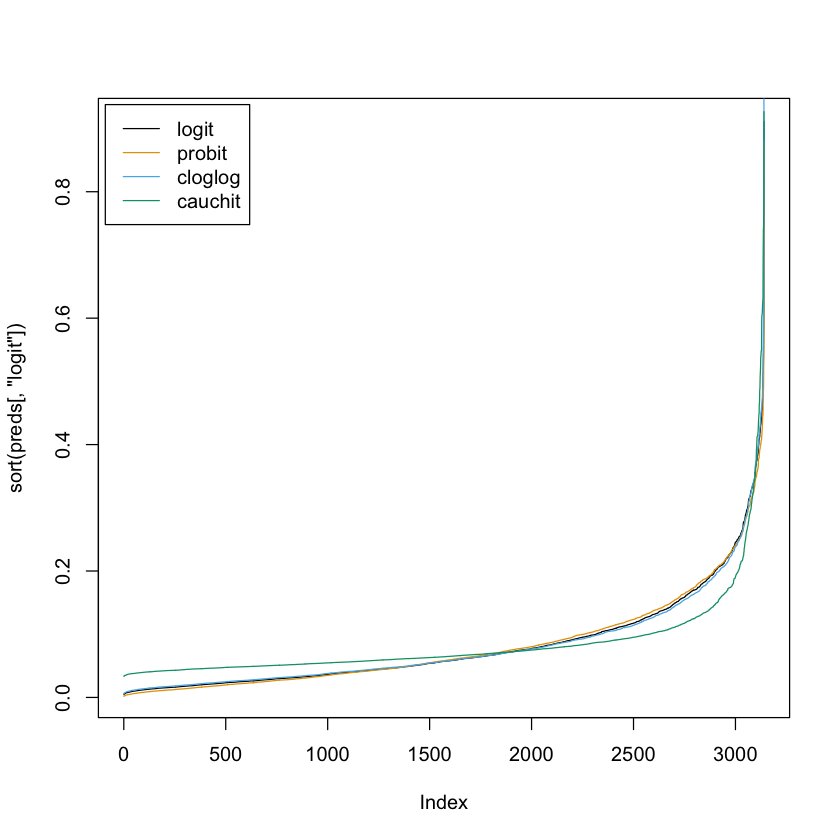
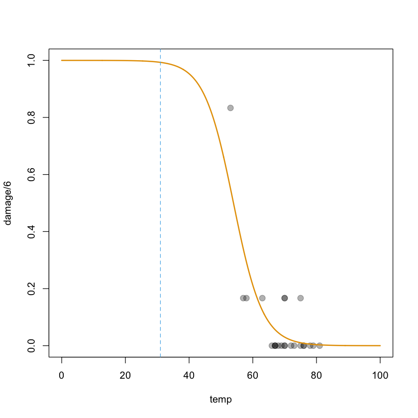

# Install required package(s)
pkgs <- c("faraway", "investr")
lib <- installed.packages()[, "Package"]
install.packages(setdiff(pkgs, lib))# Load Wisconsin breast cancer data set from faraway package
data(wcgs, package = "faraway")
head(wcgs) # print first few records| age | height | weight | sdp | dbp | chol | behave | cigs | dibep | chd | typechd | timechd | arcus | |
|---|---|---|---|---|---|---|---|---|---|---|---|---|---|
| <int> | <int> | <int> | <int> | <int> | <int> | <fct> | <int> | <fct> | <fct> | <fct> | <int> | <fct> | |
| 1 | 49 | 73 | 150 | 110 | 76 | 225 | A2 | 25 | A | no | none | 1664 | absent |
| 2 | 42 | 70 | 160 | 154 | 84 | 177 | A2 | 20 | A | no | none | 3071 | present |
| 3 | 42 | 69 | 160 | 110 | 78 | 181 | B3 | 0 | B | no | none | 3071 | absent |
| 4 | 41 | 68 | 152 | 124 | 78 | 132 | B4 | 20 | B | no | none | 3064 | absent |
| 5 | 59 | 70 | 150 | 144 | 86 | 255 | B3 | 20 | B | yes | infdeath | 1885 | present |
| 6 | 44 | 72 | 204 | 150 | 90 | 182 | B4 | 0 | B | no | none | 3102 | absent |
# Binary regression with logit link
wcgs.logit <- glm(chd ~ . - typechd - timechd - behave, data = wcgs,
family = quasibinomial)summary(wcgs.logit)
Call:
glm(formula = chd ~ . - typechd - timechd - behave, family = quasibinomial,
data = wcgs)
Deviance Residuals:
Min 1Q Median 3Q Max
-1.3568 -0.4350 -0.3115 -0.2204 2.8482
Coefficients:
Estimate Std. Error t value Pr(>|t|)
(Intercept) -12.246031 2.262122 -5.414 6.65e-08 ***
age 0.061569 0.011982 5.138 2.94e-07 ***
height 0.007068 0.032204 0.219 0.82628
weight 0.008578 0.003757 2.283 0.02250 *
sdp 0.018312 0.006194 2.957 0.00313 **
dbp -0.001175 0.010523 -0.112 0.91107
chol 0.010708 0.001479 7.239 5.66e-13 ***
cigs 0.020966 0.004149 5.054 4.58e-07 ***
dibepB -0.658194 0.141074 -4.666 3.21e-06 ***
arcuspresent 0.210539 0.139057 1.514 0.13011
---
Signif. codes: 0 ‘***’ 0.001 ‘**’ 0.01 ‘*’ 0.05 ‘.’ 0.1 ‘ ’ 1
(Dispersion parameter for quasibinomial family taken to be 0.9342892)
Null deviance: 1769.2 on 3139 degrees of freedom
Residual deviance: 1569.5 on 3130 degrees of freedom
(14 observations deleted due to missingness)
AIC: NA
Number of Fisher Scoring iterations: 6# Binary regression with Gaussian CDF/probit link
wcgs.probit <- glm(chd ~ . - typechd - timechd - behave, data = wcgs,
family = binomial(link = "probit"))# Binary regression with cloglog link
wcgs.cloglog <- glm(chd ~ . - typechd - timechd - behave, data = wcgs,
family = binomial(link = "cloglog"))# Binary regression with cauchit link
wcgs.cauchit <- glm(chd ~ . - typechd - timechd - behave, data = wcgs,
family = binomial(link = "cauchit"))summary(wcgs.cauchit)
Call:
glm(formula = chd ~ . - typechd - timechd - behave, family = binomial(link = "cauchit"),
data = wcgs)
Deviance Residuals:
Min 1Q Median 3Q Max
-1.6540 -0.4117 -0.3540 -0.3136 2.5124
Coefficients:
Estimate Std. Error z value Pr(>|z|)
(Intercept) -24.086066 5.381867 -4.475 7.63e-06 ***
age 0.115178 0.028247 4.077 4.55e-05 ***
height 0.053239 0.075906 0.701 0.483062
weight 0.002803 0.008466 0.331 0.740552
sdp 0.041702 0.011636 3.584 0.000339 ***
dbp -0.001380 0.021727 -0.064 0.949342
chol 0.019798 0.003201 6.185 6.21e-10 ***
cigs 0.042856 0.008711 4.920 8.66e-07 ***
dibepB -1.319965 0.430059 -3.069 0.002146 **
arcuspresent 0.711231 0.310369 2.292 0.021931 *
---
Signif. codes: 0 ‘***’ 0.001 ‘**’ 0.01 ‘*’ 0.05 ‘.’ 0.1 ‘ ’ 1
(Dispersion parameter for binomial family taken to be 1)
Null deviance: 1769.2 on 3139 degrees of freedom
Residual deviance: 1615.5 on 3130 degrees of freedom
(14 observations deleted due to missingness)
AIC: 1635.5
Number of Fisher Scoring iterations: 10# Compare coefficients
coefs <- cbind(
"logit" = coef(wcgs.logit),
"probit" = coef(wcgs.probit),
"cloglog" = coef(wcgs.cloglog),
"cauchit" = coef(wcgs.cauchit)
)
round(coefs, digits = 3)| logit | probit | cloglog | cauchit | |
|---|---|---|---|---|
| (Intercept) | -12.246 | -6.452 | -11.377 | -24.086 |
| age | 0.062 | 0.031 | 0.057 | 0.115 |
| height | 0.007 | 0.003 | 0.007 | 0.053 |
| weight | 0.009 | 0.005 | 0.007 | 0.003 |
| sdp | 0.018 | 0.010 | 0.017 | 0.042 |
| dbp | -0.001 | -0.001 | -0.001 | -0.001 |
| chol | 0.011 | 0.006 | 0.010 | 0.020 |
| cigs | 0.021 | 0.011 | 0.019 | 0.043 |
| dibepB | -0.658 | -0.341 | -0.604 | -1.320 |
| arcuspresent | 0.211 | 0.101 | 0.206 | 0.711 |
# Compare fitted values (i.e., predicted probabilities)
preds <- cbind(
"logit" = fitted(wcgs.logit),
"probit" = fitted(wcgs.probit),
"cloglog" = fitted(wcgs.cloglog),
"cauchit" = fitted(wcgs.cauchit)
)
head(round(preds, digits = 3))| logit | probit | cloglog | cauchit | |
|---|---|---|---|---|
| 1 | 0.071 | 0.072 | 0.072 | 0.076 |
| 2 | 0.073 | 0.074 | 0.075 | 0.084 |
| 3 | 0.010 | 0.006 | 0.011 | 0.038 |
| 4 | 0.010 | 0.006 | 0.012 | 0.039 |
| 5 | 0.169 | 0.167 | 0.168 | 0.150 |
| 6 | 0.034 | 0.033 | 0.035 | 0.051 |
palette("Okabe-Ito")
plot(sort(preds[, "logit"]), type = "l")
lines(sort(preds[, "probit"]), col = 2)
lines(sort(preds[, "cloglog"]), col = 3)
lines(sort(preds[, "cauchit"]), col = 4)
legend("topleft", legend = c("logit", "probit", "cloglog", "cauchit"),
col = 1:4, lty = 1, inset = 0.01)
palette("default")
# Compare deviances (similar to comparing SSEs in linear regression)
sapply(list(wcgs.logit, wcgs.probit, wcgs.cloglog, wcgs.cauchit),
FUN = function(object) deviance(object))- 1569.47152885988
- 1565.68277894798
- 1571.99501895609
- 1615.47659286525
###############################################################################
#
# Understanding logistic regression with binomial data
#
# (predicting O-ring failure; the Challenger disaster)
#
################################################################################ Read data documentation
?faraway::orings# Load the oring data
data(orings, package = "faraway")
# Inspect data
head(orings)| temp | damage | |
|---|---|---|
| <dbl> | <dbl> | |
| 1 | 53 | 5 |
| 2 | 57 | 1 |
| 3 | 58 | 1 |
| 4 | 63 | 1 |
| 5 | 66 | 0 |
| 6 | 67 | 0 |
# Scatterplot of proportion of damaged O-rings as a fucntion of temperature
plot(damage / 6 ~ temp, data = orings)# Expand binomial trials into Bernoulli
tmp <- rep(orings$temp, each = 6)
dmg <- sapply(orings$damage, FUN = function(x) rep(c(0, 1), times = c(6 - x, x)))
#head(dmg)
orings2 <- data.frame("temp" = tmp, "damage" = as.vector(dmg))
head(orings2, n = 15)
# Fit a logistic regression (LR) model using 0/1 version of the data
orings.lr <- glm(damage ~ temp, data = orings2,
family = binomial(link = "logit"))
coef(orings.lr)| temp | damage | |
|---|---|---|
| <dbl> | <dbl> | |
| 1 | 53 | 0 |
| 2 | 53 | 1 |
| 3 | 53 | 1 |
| 4 | 53 | 1 |
| 5 | 53 | 1 |
| 6 | 53 | 1 |
| 7 | 57 | 0 |
| 8 | 57 | 0 |
| 9 | 57 | 0 |
| 10 | 57 | 0 |
| 11 | 57 | 0 |
| 12 | 57 | 1 |
| 13 | 58 | 0 |
| 14 | 58 | 0 |
| 15 | 58 | 0 |
- (Intercept)
- 11.6629896662235
- temp
- -0.216233663599986
# What is the chance that an O-ring will be damaged at 31F? Give a point
# estimate as well as a 95% confidence interval.
predict(orings.lr, newdata = data.frame("temp" = 31), type = "response",
se = TRUE)
# Better approach for a 95% CI?
pred <- predict(orings.lr, newdata = data.frame("temp" = 31), type = "link",
se = TRUE)
plogis(pred$fit + c(-qnorm(0.975), qnorm(0.975)) * pred$se.fit)- $fit
- 1: 0.993034154696766
- $se.fit
- 1: 0.0115330160107244
- $residual.scale
- 1
- 0.844482383339883
- 0.999732875172426
# What will happen to the chance of damage if the temperature were to drop by 30F?
exp(-30 * coef(orings.lr)[2])# Is this extrapolating?
palette("Okabe-Ito")
plot(damage / 6 ~ temp, data = orings, pch = 19, cex = 1.3,
col = adjustcolor(1, alpha.f = 0.3), xlim = c(0, 100), ylim = c(0, 1))
x <- seq(from = 0, to = 100, length = 1000)
y <- predict(orings.lr, newdata = data.frame("temp" = x), type = "response")
lines(x, y, lwd = 2, col = 2)
abline(v = 31, lty = 2, col = 3)
palette("default")
# More interesting question: at what temperature(s) can we expect the risk/
# probability of damage to exceed 0.8?
#
# This is a problem of inverse estimation, which is the purpose of the investr
# package in R; see https://journal.r-project.org/archive/2014/RJ-2014-009/index.html
#
# To install from CRAN, use
#
# > install.packages("investr")
#
# See ?investr::invest for details and examples
investr::invest(orings.lr, y0 = 0.8, interval = "Wald", lower = 40, upper = 60)# Equivalent LR model using original binomial data
orings.lr2 <- glm(cbind(damage, 6 - damage) ~ temp, data = orings,
family = binomial(link = "logit"))
coef(orings.lr2)- (Intercept)
- 11.6629896952652
- temp
- -0.216233664113662
# Print summary of model fit
summary(orings.lr2)# Compute residual deviance
r <- residuals(orings.lr2, type = "deviance")
sum(r ^ 2) # similar to SSE statistic in linear regression# Over-dispersion
#
# * Over-dispersion is said to exist when there is more variability than
# expected under the response distribution; similar for underdispersion.
#
# * For a correctly specified model, the Pearson chi-square statistic and the
# deviance, divided by their degrees of freedom, should be approximately
# equal to one. When their values are much larger than one, the assumption
# of binomial variability might not be valid and the data are said to exhibit
# overdispersion. Underdispersion, which results in the ratios being less
# than one, occurs less often in practice.
#
# * Overall performance of the fitted model can be measured by several
# different goodness-of-fit tests. Two tests that require replicated data
# (multiple observations with the same values for all the predictors) are the
# Pearson chi-square goodness-of-fit test and the deviance goodness-of-fit
# test (analagous to the multiple linear regression lack-of-fit F-test).
#
# * When fitting a model, there are several problems that can cause the
# goodness-of-fit statistics to exceed their degrees of freedom. Among these
# are such problems as outliers in the data, using the wrong link function,
# omitting important terms from the model, and needing to transform some
# predictors. These problems should be eliminated before proceeding to use
# the following methods to correct for overdispersion.
#
# * A large difference between the Pearson statistic and the deviance provides
# some evidence that the data are too sparse to use either statistic.# Can use quasi-binomial family to account for over-dispersion
fit.qb <- glm(cbind(damage, 6 - damage) ~ temp, data = orings, family = quasibinomial)
summary(fit.qb)
Call:
glm(formula = cbind(damage, 6 - damage) ~ temp, family = quasibinomial,
data = orings)
Deviance Residuals:
Min 1Q Median 3Q Max
-0.9529 -0.7345 -0.4393 -0.2079 1.9565
Coefficients:
Estimate Std. Error t value Pr(>|t|)
(Intercept) 11.66299 3.81077 3.061 0.00594 **
temp -0.21623 0.06148 -3.517 0.00205 **
---
Signif. codes: 0 ‘***’ 0.001 ‘**’ 0.01 ‘*’ 0.05 ‘.’ 0.1 ‘ ’ 1
(Dispersion parameter for quasibinomial family taken to be 1.336542)
Null deviance: 38.898 on 22 degrees of freedom
Residual deviance: 16.912 on 21 degrees of freedom
AIC: NA
Number of Fisher Scoring iterations: 6#
# Same as using quasi-binomial family above
#
# Estimate of dispersion parameter; analagous to MSE in linear reg.
(phi <- sum(residuals(orings.lr2, type = "pearson") ^ 2) / orings.lr2$df.residual)
# Print model summary based on estimated dispersion parameter
summary(orings.lr2, dispersion = phi)
1.33654188207683
Call:
glm(formula = cbind(damage, 6 - damage) ~ temp, family = binomial(link = "logit"),
data = orings)
Deviance Residuals:
Min 1Q Median 3Q Max
-0.9529 -0.7345 -0.4393 -0.2079 1.9565
Coefficients:
Estimate Std. Error z value Pr(>|z|)
(Intercept) 11.66299 3.81077 3.061 0.002209 **
temp -0.21623 0.06148 -3.517 0.000436 ***
---
Signif. codes: 0 ‘***’ 0.001 ‘**’ 0.01 ‘*’ 0.05 ‘.’ 0.1 ‘ ’ 1
(Dispersion parameter for binomial family taken to be 1.336542)
Null deviance: 38.898 on 22 degrees of freedom
Residual deviance: 16.912 on 21 degrees of freedom
AIC: 33.675
Number of Fisher Scoring iterations: 6# How is the residual deviance computed?
deviance(orings.lr2)
# Computing by hand
d <- residuals(orings.lr2, type = "deviance")
sum(d ^ 2) # analagous to SSE in linear reg.